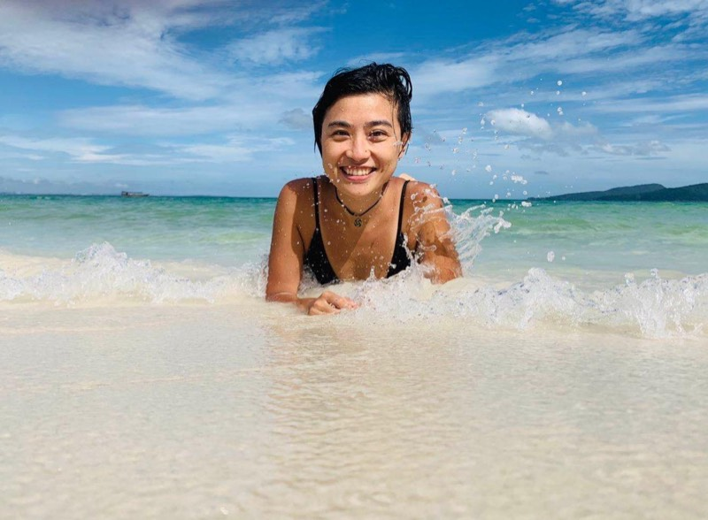
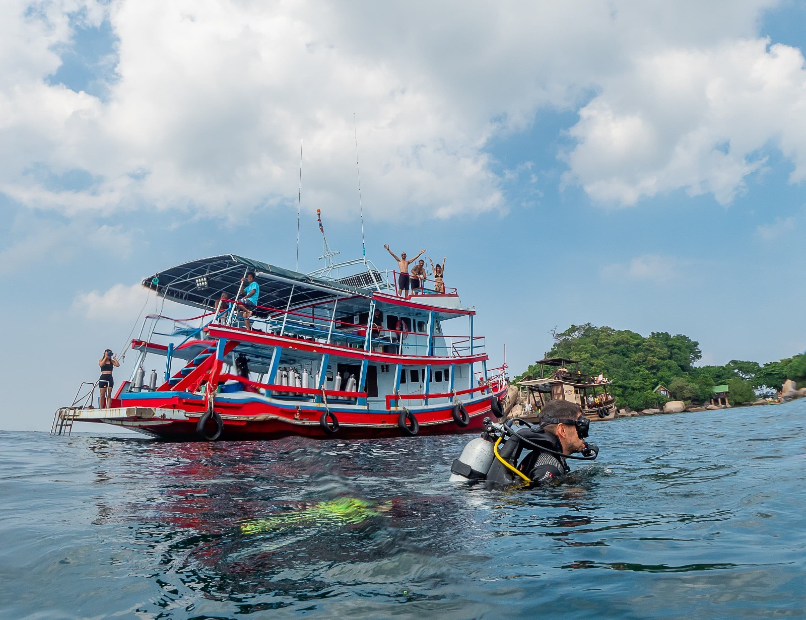
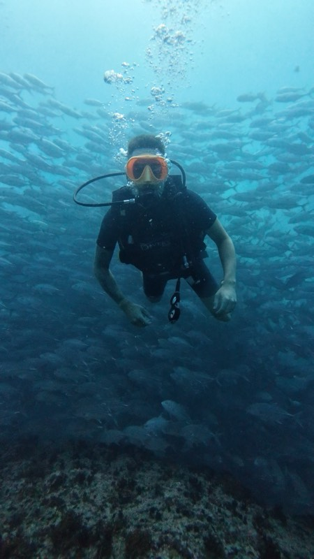
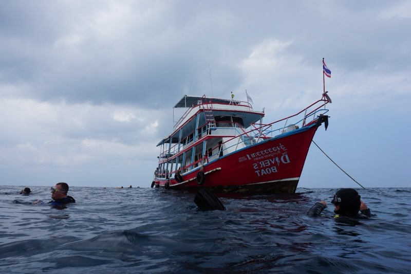
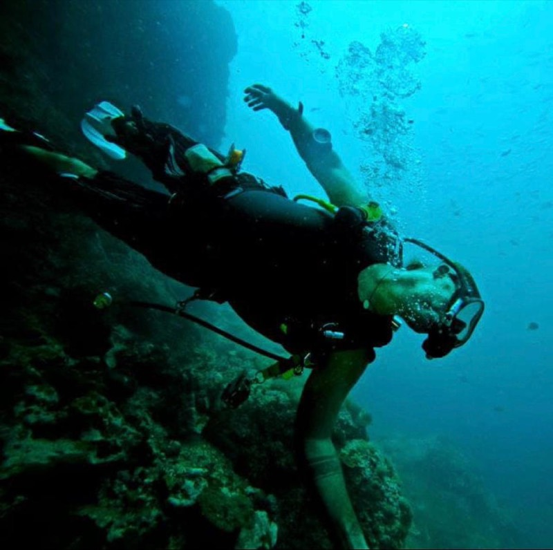
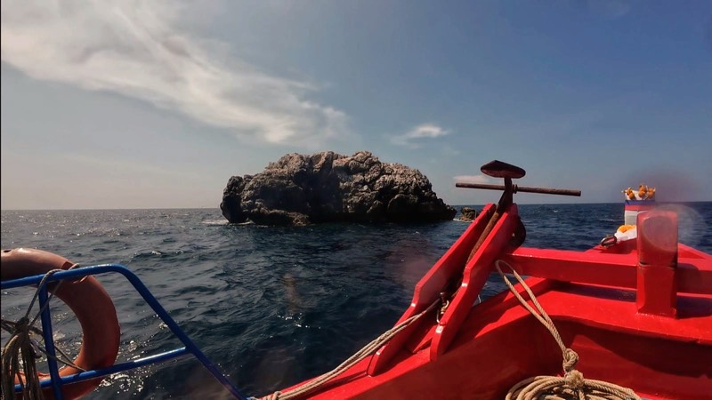

Mánager · oficina y reservas
Ruiyao Wang
Rui es el corazón de The Diver's Boat Koh Phangan. Lleva la oficina y todas las reservas, se asegura de que el día fluya y te da la bienvenida que te mereces, en inglés o en chino.

Inicio / Quiénes somos
Abrimos en enero de 2024 con una idea clara: buceo seguro, grupos reducidos y un ambiente relajado. Nuestros instructores SSI tienen más de diez años guiando inmersiones en Egipto, Filipinas, Indonesia y Tailandia, y ese nivel ahora está aquí, a bordo de nuestro propio barco.
Por qué importa
Máximo 20 a bordo
La mayoría de barcos salen con más de 30 buceadores. Nosotros nos limitamos a 20. Menos gente significa un instructor más atento, el equipo montado con calma y más espacio en cubierta entre inmersiones.
9:30 desde Chaloklum
Nuestra salida a las 9:30 te lleva a Sail Rock y Koh Ma cuando otros barcos ya están volviendo. Puntos de buceo con menos gente y mejor visibilidad.
Si las condiciones lo permiten
Con buceadores titulados visitamos varios puntos alrededor de Koh Phangan en un mismo día. Sail Rock y la plataforma petrolífera son los favoritos. Más vida marina y menos tiempo de trayecto.

Diez años, tres idiomas de enseñanza
Los instructores
El centro abrió en 2024, pero el equipo que hay detrás lleva más de una década bajo el agua. Hemos trabajado en algunos de los mejores destinos de buceo del mundo y aquí aplicamos el mismo nivel: briefings claros, puntos elegidos según la marea y planes realistas en lugar de los de manual.
Enseñamos en español, inglés y francés, con italiano y alemán a bordo gran parte de la temporada y ruso algunas fechas. Venimos de Egipto, Filipinas, Camboya, Vietnam e Indonesia. Esa perspectiva global sirve sobre todo para una cosa: explicar la vida marina, las corrientes y la técnica de forma que lo entienda alguien que nunca se ha puesto una máscara.

Rungworawan · amplio y estable
Seguridad y equipo
Como centro de 2024, todo nuestro equipo es nuevo, y se revisa todos los días. Reguladores, jackets y neoprenos de la XS a la XXL, con mantenimiento oficial SSI desde el primer día. Ven con tu bañador; el resto lo tenemos en tu talla.
Queremos que te sientas como en casa y te lleves recuerdos para siempre. Nuestros instructores te acompañan desde la preparación hasta el debriefing, y el plan de inmersión se adapta a ti, no al revés.
El equipo

Mánager · oficina y reservas
Rui es el corazón de The Diver's Boat Koh Phangan. Lleva la oficina y todas las reservas, se asegura de que el día fluya y te da la bienvenida que te mereces, en inglés o en chino.

Mánager · instructor principal · SSI n.º 112758
Profesional del buceo desde 2015 (empezó como divemaster y le encantó) e instructor SSI desde 2022, con más de 5.000 inmersiones a sus espaldas. Boris dirige a los instructores y divemasters para que cada salida sea segura, divertida y adaptada a tu nivel.

Nuestro barco
Amplio, estable y totalmente equipado. Nos lleva a Sail Rock cada día. Súbete en la próxima salida y forma parte de su historia.
Nuestros centros
Formamos parte de The Diver's Boat. La base principal está en Koh Tao desde 2015, y el centro de Koh Phangan funciona en Chaloklum desde enero de 2024, gestionado en el día a día por Boris y Rui, con más de 400 buceadores titulados hasta ahora. Dos islas, el mismo propietario y el mismo nivel, y uno de los mejores pináculos del sudeste asiático entre ambas.
Escríbenos por WhatsApp con tu nivel y tus fechas. Te responde una persona de verdad, normalmente en menos de una hora.